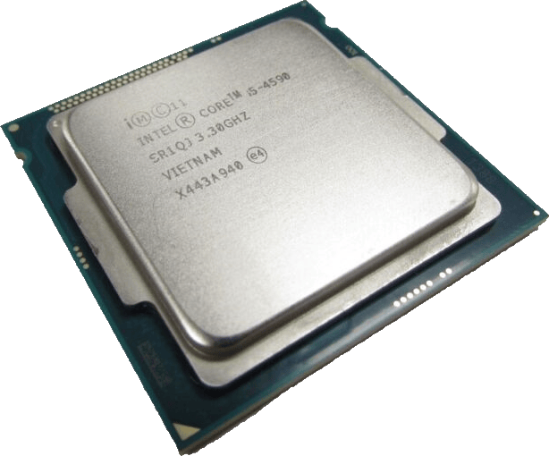
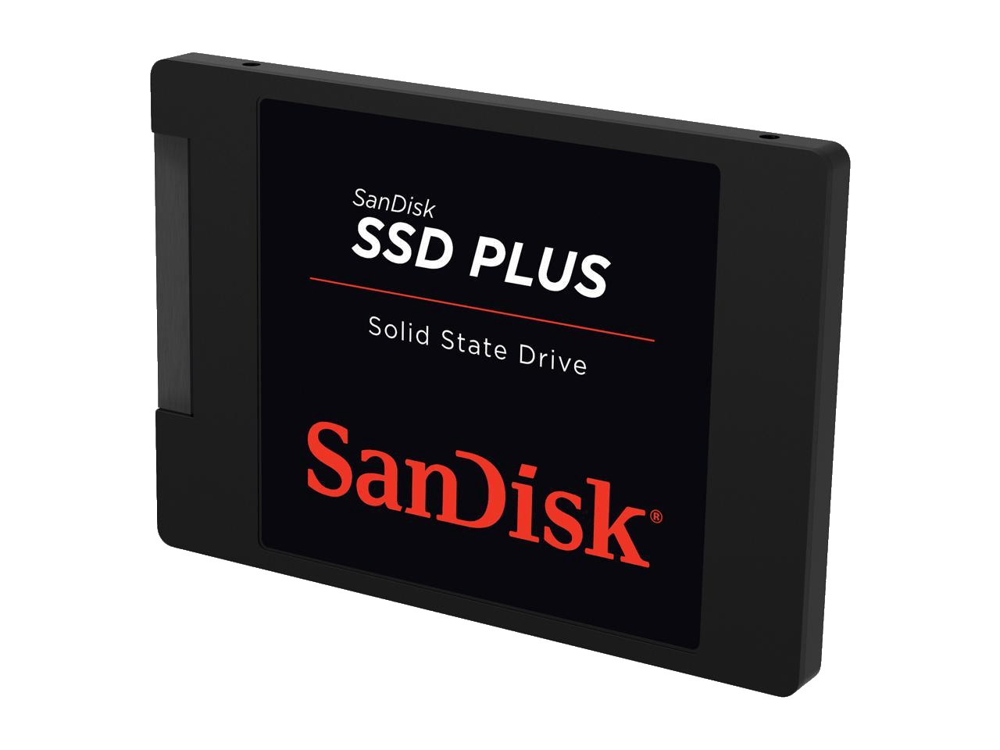

BIAQ
BIAQ
Quick Links
++ Status ++ Dashboard WeltmeereSponsoren
950€Main Server, Modem, Miscellaneous
The Homelab
Server
dancin' in my room
swayin' my feet


220€Mainboard, 3 HDDs
The Mainboard
Gigabyte B760M DS3H AX

2x Seagate FireCuda Compute 2TB ≙ 4TB

WD Elements Portable 2TB
50/50 with Max
70€Firewall
The Firewall
Dell Optiplex 3020 SFF
Intel Core i5-4590
8GB DDR3
256GB SSD
Fujitsu D2745-A11
Purchased by Max
34€Switch
The Switch
Netgear GS308E


14,99€A Sushi Packet
The Sushi Package
EAT HAPPY Mixed Box Large

Was ist BIAQ? - Geschichte
Phase 1: Raspberry Pi und Apfelcast
Max stöberte eifrig weiter und stieß letzendlich auf den Youtuber Apfelcast. Dieser pflegte bereits zu
dieser
Zeit eine beachtliche Palette an Inhalten zum Thema OwnCloud, und viel wichtiger: Nextcloud.
Nach einigen kinderleichten Anleitungen glückte Max die Einrichtung der ersten funktionellen Cloud-Instanz,
mithilfe des vorgefertigten Images "NextcloudPi".
Erste Probleme machten sich bemerkbar. So war das größte die dynamische IP Adresse. Mittels einiger
Recherche
und des Anbieters NoIP schufen Philipp und Max ihre erste eigene Domain:
philipp-max.ddns.net. Dieses Ereignis lässt sich auf den 27. Mai 2020 datieren. Auch wenn Nextcloud aufgrund
der Hardware Limitierungen des Raspberry Pis an erheblichen Performance Problemen litt, hielt sich diese
Instanz für mehrere Wochen.
Phase 2: Der Aufbau
Die beiden Jungs entdeckten das unendliche Potenzial, welches ihnen zu Füßen lag. Von dort an lassen sich
nur
noch grobe Zeiträum einteilen.
Mit jeder Woche wurde der gesamte Aufbau besser und professioneller. Einige Domains wie pm-cloud.ddns.net
waren nur von kurzer Dauer.
Die Namensgebung basierte jedoch immer auf den Initialen von Philipp und Max, und manchmal auch Lennard,
sowie
Stichwörters wie "cloud" oder "nx", abgeleitet von Nextcloud.
Phase 3: Der Aufschwung und Strato
Genervt von der minderwertigen Leistung des bisherigen Servers traf Max die Entscheidung, einen
performanteren
Server in einem Rechenzentrum zu mieten.
Konfrontiert mit einem beschränkten Budget wählte er den Anbieter Strato. Unter dem Namen des Vaters wurde
das
nun nicht mehr existente Linux V30-8 Paket am 31. August 2020 bestellt und konnte am folgenden Tag, dem 01.
September 2020 in Betrieb genommen werden.
Über die genauen Spezifikationen beliefen sich auf 8Gb RAM und 600Gb SSD Speicher, sowie 6 vCores.
Die IP Adresse war nun das erste Mal fest und eine kostenlose Domain "nx-cloud.tk" vertrat bis zum
11.12.2021
den Zusammenschluss von Philipp, Max und später auch Lennard.
Die 9€ monatlich anfallenden Kosten wurden von Zeit zu Zeit zwischen den Teilnehmern halbiert bzw.
gedrittelt.
Diese Instanz begleitete Philipp und Max durch den großteil der Corono Pandemie und bat stets genutzte
Möglichkeiten
wie Videochats oder Kollaboration an Dokumenten.
Phase 4: Es wird ernst
Am 11.12.2021 erstand Max die erste Top-Level-Domain. Sie lautete "gymbwi.de", abgeleitet von dem derzeit
besuchten Gymnasium Bürgerwiese (BüWi).
Max hatte ein wachsendes Verlangen nach mehreren größeren Spielereien und mietete sich deshalb zeitgleich
zum
ersten VPS einen zweiten, mit ähnlichen Spezifikationen beim Anbieter Contabo.
Der Hauptauslöser dafür war ein eigener Mailserver. Der VPS bei Strato stellte als Virtualisierungsplattform
nur OpenVZ bereit, was dem Betrieb des erwünschten selbstgehosteten Mailserver Mailcow, genauer gesagt
Docker
einen Strich durch die Rechnung machte.
Contabo bat jedoch VPS Lösungen mit KVM an, worauf Max am 12.03.2022 das VPS S SSD Paket mit zusätzlichem
SSD
Speicher für 7,73€ im Monat erstand. Diese Kosten sollte er vorerst selbst tragen.
Dieser Server stellte nun den eigenen Email Dienst bereit, unter der Domain gymbw.de.
Phase 5: Veränderung
Für einen kleinen Aufpreis für nun montalich 12,49€ erhielt Max nur ca. zwei Wochen später am 19.04.2022 das
VPS M SSD Paket, wieder mit zusätzlichem SSD Speicher. Die Befürfnisse wuchsen, und langsam aber sicher
begann
die Migration.
Der erste Strato Server wurde langsam obsolet. Contabo bat ein besseres Preis-Leistungs-Verhältnis. Wie
gesagt, alle Services wurden auf den neuen Server umgezogen.
Der VPS bei Strato wurde gekündigt und lief am 22.10.2022 aus. Zwei Monate vorher jedoch ereignete sich das
bisher zwei-wichtigste Ereignis in dieser Geschichte.
Phase 6: BIAQ
Nach der eigenen Rechtfertigung, dass die monatlichen 12,49€, die noch selbst getragen wurden, zusammen mit
den bei Strato bezahlten monatlichen 9€ etwas über 20€ ergaben und theoretisch mit der Kündigung des Strato
Servers
keinen bewegenden finanziellen Unterschied brachten, traf Max eine Entscheidung. Einen Tag vorher, am 05.
August 2022 jedoch, auf einer Rückfahrt aus dem Urlaub in Frankreich musste ein neuer Name her.
GymBwi war nichtssagend. Man konnte sich damit nicht identifizieren und es schien wie eine billige Kopie der
Domain des Gymnasiums "gymbw.de". Diese Idee fasste Max aber nicht allein.
Einige Tage vorher berieten sich Lennard und Max auf einer Bank am Hellerauer Dorfteich, dem Gondler, über
einen neuen Namen. Etwas einzigartiges. Doch das war garnicht so einfach.
Sie kamen auf keinen Entschluss. Mit genügend Zeit in der Tasche machte sich Max ans Werk. Ein guter Ansatz
war Latein. Treffende Wörter ins Lateinische übersetzen und zusammensetzen,
um einen passenden Namen zu schaffen. Kandidaten waren quari, ovium, quava, clema, damigo und claq. Wie es
nun
zu biaq kam ist in der Geschichte verloren gegangen, es war sehr wahrscheinlich
eine Zusammensetzung aus "bi" für "Zwei", "amicis" für Freunde und das q wurde gewählt um einen schlichten,
bescheidenen Look zu geben. BIAQ war geboren und Max zögerte nicht.
Am selben Tag mietete er die Domain biaq.de, da biaq.com bereits belegt war.
Um auf die Server Situation zurückzukommen, es ging richtig los. Am 06.08.2022 für nun 24,98€ (nach einem
Inflationsausgleich) im Monat sollte der bisher vorletzte Server unter dem neuen Schein von BIAQ stehen.
Alles nahm gehörig an Fahrt auf. Die Mailboxen wurden mehr, etliche Services wie Gameserver,
Passwortmanager,
Wikis und vielen weitere grandiosen Applikation sprossen aus dem Boden.
Auch in der Schule bekamen Philipp und Max für diese Errungenschaft immer höheren Respekt zugewiesen. Es
lief
stabil und war meist zuverlässig. Die 1.3TB Speicher waren reichlich und die 32GB RAM waren vorallem für Max
ein wahrer Traum.
Doch das Ganze sollte gerade ein Jahr halten.
Phase 7: Die Revolution
Max erlangte ein immer größeres Wissensreichtum in Sachen Linux, Servern, Cybersicherheit und vielem Mehr.
Der
Traum eines eigenen physischen Servers war bisher zu fern zum greifen gewesen. Ein dedizierter
Root Server kostete ein Vermögen und bot ihm nicht die gewünschte Kontrolle. Er wusste, eines Tages würde er
sich einen eigenen Server anschaffen.
In den letzten zwei Wochen der Sommerferien 2023 arbeitete Max einen Ferienjob bei Infineon, welcher ihm mit
einem Budget von rund 800€ beflügelte.
Die Bedenken und Beratungen waren endlos. Jeden Tag wurde in der berühmten LeBoy-Ecke mit möglichen
Szenarien
geliebäugelt.
Der Entschluss war gefallen. Der eigene Server muss kommen. Da Max das Geld erst Hälfte September 2023
erhalten sollte, wurde zuerst geplant.
Für maximale Sicherheit und Kontrolle musste sich eine eigene Firewall angeschafft werden. Was man
zusätzlich
brauchte war ein Gigabit Switch und wie sich später herausstellte auch ein Modem.
Teil 1 Server: Netzwerk
Max' ursprüngliche Idee war es, bei der bereits vorhandenen FRITZ!Box eine Funktion namens PPPoE-Passthrough
zu aktivieren, um sich die Kosten eines Modems zu ersparen, und einen kleineren WiFi-Repeater als Access
Point
zu verwenden.
Letzendlich kam hier jedoch eine alte FRITZ!Box 7272 in Verwendung, welche aufgrund ihrer maximal 100MBit
LAN
Ports als Access Point eine absolute Katastrophe darstellte.
Diese Idee war also, wie sich schnell herausstellte, ein Schuss in den Ofen, da die Familie Bruch in jener Woche
mit
massiven Internetproblemen bzw. -abstürzen zu tun hatte. Es wurde mit der Einstellung des Projekts gedroht.
Nun kommt Constantin ins Spiel. Constantin, bisher nur fern involviert und eher wenig affin mit der ganzen
Geschichte bekam ein immer größeres Interesse. Denn schon vorher stand offen, wie viel denn nun jeder der
Freundesgruppe "Die Yallas"
zu dem Projekt beisteuern würde. Constantin erklärte sich bereit, für rund 70€ einen gebrauchten Dell
Optiplex
Office PC zu kaufen, welcher effektiv als Firewall dienen sollte (siehe Server Setup).
Max beschuf die entsprechende Netzwerkkarte und die Firewall sollte in Betrieb genommen werden. Nach einem
Horror-Wochenende gelang es Max, sich durch das bisherige Übergangs-Modem, der FRITZ!Box ins Internet,
genauer
gesagt WAN einzuwählen.
Aber dort hört es bei Weitem noch nicht auf. Aaron, zu jenem Zeitpunkt in Südafrika, erstand für 34€ einen
8-Port Gigabit Switch. Welcher vorallem für den späteren Betrieb mit dem Server gedacht war.
Nun stand aber fest, dass alles so nicht funktionieren kann. Es muss ein richtiges Modem her. Die nötigen
130€
für Modem, richtige Netzwerkkabel und RJ-11 Stecker für die DSL Leitung hatte Max akut aber keineswegs
parat.
Constantin legte nach einigen Überredungen das nötige Geld aus und ist somit einer der wichtigsten, wenn
nicht
sogar die wichtigste Person in der Gründung des eigenen Servers. Es wurde nun die FRITZ!Box als Access Point
verwendet, was erheblich bessere Leistung bereitstellte.
Das Modem funktioniert bis dato einwandfrei und die grundlegende Netwerkstruktur war gegeben. Das heißt, die
neue Firewall war nun in Betrieb und es fehlte nun nur noch der Hauptbaustein: Der Server. Bevor man diesen
Schritt jedoch tun konnte,
musste sich um das Internettarif gekümmert werden. Die Bisherigen 50Mbit Download und 10Mbit Upload würden
keineswegs ausreichen. Die erste Eingebung war ein Geschäftskundentarif bei der Telekom.
Diese lehnte diesen jedoch ohne zu zögern ab, weshalb letzendlich der schnellstmögliche Tarif mit 250Mbit
Download und 40Mbit Upload gewählt wurde. Das Problem mit einer dynamischen IP Adresse sollte sie bis heute
plagen.
Teil 2 Server: Der Server
Die Selektion und Kauf der Teile wurde unwissentlich zum perfekten Zeitpunkt getätigt. Aber wir bewegen uns
zu
schnell.
Die Vorstellungen waren glasklar: viel Performance. Eine starke, overkill CPU, DDR5 RAM, ein qualitativ
hochwertiges Netzeil und viel mehr (siehe Server Setup).
Philipp, einer der beiden OG Member setzte sein Budget zu Freuden Max' auf 150€, nicht zuletzt wegen seiner
Anstellung bei Nordsee. Er übernahm virtuell das Motherboard.
Bereits am 06. September wurde dieses wieder mithilfe eines finanziellen Kredits von Constantin bestellt. Es
musste aus den USA importiert werden.
Am 12. September, zum ziemlichen Tiefpreis aller Teile gab Max das Geld des Ferienjobs so schnell aus, wie
es
auf seinem Konto erschienen war. Alle restlichen Teile wurden bestellt und kamen binnen weniger Tage an.
Der Aufbau war mit kleinem Holpern hier und da dennoch reibungslos und es konnte losgehen.
Max, zu diesem Zeitpunkt eher weniger vertraut mit der erwünschten Virtualisierungssoftware Proxmox (Virtual
Environment) brauchte mehrere Tage, um alles in Gang zu bekommen.
Das Problem der dynamischen IP Adresse wurde vorerst gelöst, in dem eine permanente VPN Verbindung zu einem
kleinen Server im Rechenzentrum bei Hetzner in Sachsen, Falkenstein besteht.
Jeglicher Datenverkehr wird duchgereicht und im Internet kommt es so vor, wie als hätte der eigentliche
Server
eine feste IP Adresse. Gedacht war dies eigentlich nur für die Migration des Mailservers, welcher, wie sich
später herausstellte, Schwierigkeiten bereiten sollte.
Dennoch arbeitet diese Methode bis heute äußerst zuverlässig und stabil. Um auf die Gesamtlage
zurückzukommen,
es lief alles blendend. Ein wenig später kam sogar eine Speichererweiterung in Form einer 2TB HDD dazu.
Nie zuvor gesehene Performance und Kontrolle.
Teil 3 Server: Contabo
Kurz vor dem tatsächlichen Zusammenbau des Servers musste der "alte" selbstverständlich gekündigt werden.
Mit
einer Kündigungsfrist von einem Monat und einer Vertragserneuerung im August 2023 war Max eine Woche zu
spät.
Die Stimmung war verständlich gedämpft. Doch wie sich herausstellte war der alte Server in der Aufbauphase
des
neuen unabdingbar, denn sonst wären entweder alle Daten verloren gegangen, oder man hätte sie herunterladen
müssen.
So konnte nun der alte Server auf den neuen sicher migriert werden, ohne Komplikationen. Wie im folgenden
Abschnitt klar wird, wird der alte Server noch eine weitere esentielle Rolle einnehmen.
Phase 8: Erhebliche Schwierigkeiten
Den eigenen Mailserver von Contabo zu migrieren war einer der verbleibenden großen Ziele. Doch um es kurz zu
fassen, es war ein Trauerspiel. Durch die dynamische IP Adresse und die erzwungene Lösung, bleibte ein
Mailserver auf diesem Server ein ferner Traum.
Um den ein weiteres Jahr laufenden Server bei Contabo noch zu verwenden, ließen sie den Mailserver dort bis
zum Vertragsende August 2024 laufen.
Das Problem war recht schnell gelöst, nichts im Vergleich zu dem was kommen sollte.
Sie hatten einen ersten Kunden. Einen Minecraft Gameserver. Dies sollte eigentlich gar kein Problem
darstellen. Von dort an aber, wurde es alles nur noch schlimmer. Ganze Virtuelle Maschinen und viel öfter
der
Gameserver selbst crashten.
Das Problem war garnicht so leicht zu bestimmen, wie sich später herausstellte war es wahrscheinlich ein RAM
Problem, genauer gesagt ein Out-Of-Memory Problem bzw. einfach zu wenig RAM.
Es wurde scheinbar mit jeder Woche schlimmer und häufiger. Dennoch war es vorerst spielbar.
Doch als am 24.12.2023 auf 64GB RAM aufgerüstet wurde, brach die Hölle herein. Nun waren nicht nur die
Prozesse betroffen, welche viel RAM brauchten, sondern das gesamte System.
Man muss sagen, dass es bis zu den Winterferien 2024 keine größeren Probleme gab, da der erste Minecraft
Server Kunde keinen Bedarf mehr hatte.
Doch passend zu Beginn der Ferien wurde es barbarisch. Vollständige Abstürze und Freezes, mehrmals täglich.
Die kontinuierliche Benutzung der Services war unmöglich.
Es war wie verhext und Max hatte scheinbar alles probiert.
Und dann erinnerte er sich. 4 Sticks DDR5 RAM sollten nur Unheil bringen, meinte er in einem Forum gelesen
zu
haben. Prompt deaktivierte er XMP, also das eingebaute Übertackten des RAMs.
Und plötzlich war alles verschwunden. Das zugrundeliegende System Proxmox stürzte nicht mehr ab. Eine
falsche
Sicherheit in der sich alle wiegen sollten.
Einige Wochen vergingen, ein kleiner Crash hier und da, kein großes Problem.
Nun kam der nächste Kunde mit Bedarf eines noch größeren Minecraft Servers.
Und dann traf es Max wieder. "Out of Memory". Das konnte alles nicht wahr sein.
Was zur Hölle nahm sich denn diesen ganzen RAM? Und ausnahmsweise lag die Lösung direkt auf der Hand: Das
Dateisystem, ZFS.
Nach einigen Kalkulationen limitierte Max diesen und einen Neustart später sollte der Server bis heute keine
Probleme mehr haben.
Phase 9: Reformation netcup
Im Intranet wurden alle Nutzer mit lästigen Zertifikaten und Vertrauenseinstellungen genervt. Für Constantin war der Zugriff unmöglich.
Mit wenig Vorwissen über Nameserver, transferierte Max die Domain biaq.de am 14. April 2024 zu dem weitaus günstigerem (und besseren) Registar netcup.
Auch eher weniger zufrieden mit der vorhandenen API Schnittstelle, wurde Cloudflare als Nameserver verwendet.
Hier konnten mit Leichtigkeit Wildcard Zertifikate für das Intranet ausgestellt werden. Auch später sollte das Ganze der Automatisierung des Mailservers zu Gute kommen.
Bevor aber vom Mailserver die Rede sein kann, muss erst das neue Projekt vornehmlich von Max mit Unterstützung von Constantin betrachtet werden.
BIAQ Productions
Der schon etwas länger existierende YouTube Kanal wurde nun in englisch- und deutschsprachig aufgeteilt und erste kurze Videos wurden veröffentlicht.
Im Zusammenhang damit wurde nur 10 Tage später am 24. April 2024 die Top-Level-Domain biaqproductions.de erstanden.
Es sollte hier bis heute unter der forum.biaqproductions.de Subdomain ein Discourse Forum für Diskussionen über die Videos residieren.
Mailserver
Es wurde langsam Zeit den auslaufenden Server bei Contabo zu verlassen. Deshalb mietete Max am 3. Mai 2024 für ca. 17€ im Monat einen Server bei der bereits vertrauten netcup GmbH.
Das Paket RS 2000 G11 bat 8 dedizierte Kerne, 16GB DDR5 RAM, eine 512GB NVMe SSD und eine 2,5Gbit/s Anbindung. Mehr als ausreichend.
Der Mailserver wurde schnell ohne weitere Probleme umgezogen. Was tat man nun mit dem alten Server für die restlichen drei Monate?
Eine Applikation, besser gesagt ein Bundle mehrerer, namens T-Pot, bat wertvolle und spannende Einblicke in die Zu- und Angriffe die auf den alten Server stattfanden.
Nun wurde auch endlich das VPN reformiert. Das heißt es bat nun schnelle Geschwindigkeiten mit einem zeitgleichen Zugang zum Intranet.
Florian "Scxptix" Matz
Ein ebenfalls technikbegeisterter Mitschüler, mit seinem Alias Scxptix, arbeitete seit Beginn des Jahres 2024 mit BIAQ zusammen.
Der BIAQ Server stellte eine weitere Schicht Sicherheit und nötige Tools bereit.
Sowohl der Webverkehr als auch E-Mails laufen bis heute über BIAQ und mit stetig weiteren Verbesserungen sollte diese Beziehung noch lange Zeit bestehen.
Phase X: Allgemeine Entwicklungen
Über die Zeit erlangte das Ganze vorallem in ihrer Schule hohes Ansehen. Es war nicht zu leugnen, dass
vorallem Nextcloud eine wunderbare Kollaborationsplattform war.
Gerade dem Leitungsmitglied Constantin gelang es in einigen Kursen die Cloud zu verbreiten und auch die neu
erstellte Website biaq.de wurde mit ihren stetig wachsenden Funktionen gerne Anderen vorgestellt.
Die Applikationen und Services wurden von Tag zu Tag mehr. Wie bei Contabo gab es Passwortmanager, einen
Mediaserver und viele Mehr.
Eine letzte Addition enthielt das Aufsetzen eines Backup Servers, mit einer eigenen 500GB HDD. Datenverlust
war nun erstmalig eine kleinere Sorge.
Ein wichtiges Event war die LAN Party vom 01.12. auf den 02.12.2023. Die gesamte Netzwerkinfrastruktur und
die
bauliche Stabilität des Switches und der LAN Kabel wurden unter Beweis gestellt: Erfolgreich.
Schlusswort
Die Geschichte von BIAQ ist noch nicht fertig geschrieben. Bis jetzt sieht man jedoch welch großartige
Entwicklungen von Freundschaft und stetiger Willenskraft entspringen können.
Unser aller Wissenskosmos und Erfahrungen erfuhren über die gesamte Zeit einen enormen Zuwachs. Wir lernten,
was es heißt Fehler zu machen und diese mit Gelassenheit gemeinsam zu lösen.
Und man muss schließlich auch zugeben, dass man mit einem eigenen Server immer ein wenig mehr
besonders war, als der Rest.
Auf einer eigenen Website geehrt und verewigt zu werden bereitet einem nicht zuletzt ein Gefühl
von Stolz und Errungenschaft, genommen mit ein wenig Humor.
Ein großes Danke an den Youtuber Apfelcast, der mir als Wegbegleiter und -bereiter diente.
Eine Biografie über BIAQ von Max Bruch
Was bietet BIAQ?
BIAQ bietet dir die nötige Hilfe um mit deinem Server und damit auch anderen Projekten reibungslos durchzustarten.
Wir bieten allerdings auch interne Services, wie:
- Nextcloud - Kollaborations- und Filesharing Plattform
- Bitwarden - Dein Passwortmanager, selbstgehostet
- Pterodactyl - Gameserver
- Mailcow - Mail Server (biaq.de und andere beliebige Domains!)
- Und etliche andere Services. Bei Fragen an das Leitungsteam wenden.
Coding Experience
Sometimes the GitHub icon looks scuffed on hover and the invert filter is lacking behind.
GitHub
If you want to contribute, hit me up.
Intranet
How does the BIAQ Intranet work?
The BIAQ Intranet
It's very simple:
- Connect to the BIAQ VPN and head to intra.biaq.de for further guidance
Server Setup
Server
- Intel Core i5-13500
- 64GB Corsair Vengeance DDR5 6000MHz CL36
- Seasonic Focus PX-550
- Gigabyte B760M DS3H AX
- Lexar NM790 2TB Gen4 NVMe
- Western Digital Elements 2TB HDD
- Fractal Design Pop Air
- Deepcool AK620
- Arctic MX-6
Firewall
Dell Optiplex 3020 SFF
- Intel Core i5-4590
- 8GB DDR3
- 256GB SSD
- Fujitsu D2745-A11 4-Port Gigabit NIC
Networking
- DeleyCON Cat.7 S/FTP Patch Cables
- Netgear GS308E Switch
- Zyxel VMG4005-B Modem
Server is running Proxmox VE